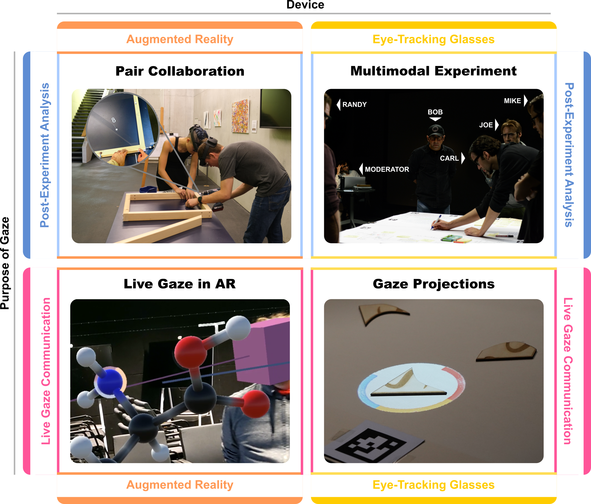

The Challenges of Eye-Tracking Visualization in Multi-User Collaboration

(opens in new tab)
Venue. ETRA (2026)
Materials.
DOI(opens in new tab)
PDF(opens in new tab)
Abstract. This work discusses the application of eye tracking and visualization in collaborative scenarios involving two or more people. Based on our recent prior work on co-located scenarios, where all participants are in one room, we discuss the challenges and outline future research directions, also including remote collaboration. This work showcases different scenarios of our previous research and reflects on aspects for future applications. We categorize the discussed examples into different dimensions: post-experiment analysis, live gaze communication, and eye tracking with head-mounted displays or glasses. Two examples comprise eye tracking for evaluation purposes for augmented reality and creative workshop analysis with multimodal data recordings. In both cases, eye tracking can provide valuable insights into human visual perception and cognitive processes during collaborative tasks. Gaze cues, in contrast, support communication by a live display of where others are looking. We present two examples, one in augmented reality and one with projector-based displays, where such live communication was implemented. The presented examples combine different tasks and technologies, providing an overview of several potential directions for future research.
Link to this page: